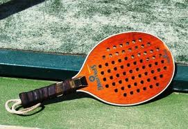

El Pádel nació en Acapulco (México) en 1969,
cuando un contratista llamado Enrique Corcuera adaptó
un terreno de su finca de 20 x 10 metros colocando paredes en sus
fondos y laterales para que la vegetación no invadiera su pista.
Un español amigo del señor Corcuera, que solía viajar bastante a México, trajo la idea a Marbella. Este hombre llamado Alfonso Hohenloe puso una pista en el club de Marbella la cual le pertenecía. Muchos jugadores de polo venidos de Argentina aprendieron en Marbella lo que era el pádel y cuando retornaron a Argentina comenzaron a difundir el pádel como un juego divertido y fácil que tiene instalaciones baratas.
Por consiguiente el pádel comenzó su expansión en Argentina y en España. En España comenzó a ser practicado en muy distinguidos porque estas personas solían visitar en estos tiempos y cogieron la idea para sus clubes. Estos clubes eran:
Después de esto el pádel comenzó a crecer ilimitadamente debido a la Federación y a la aparición de algunos campeonatos de Pádel retransmitidos por televisión.
El Pádel es el único deporte que combina los mejores elementos del tenis, racquetball y squash. Se practica frecuentemente sobre superficies de cemento, pero existen canchas con pisos de césped sintético y supreme court. El Pádel se juega casi en su totalidad en complejos exclusivos de este deporte. Existen clubes de una sola cancha, hasta complejos de 20 canchas cubiertas (las canchas pueden ser cubiertas o descubiertas).
El Pádel fue incorporado como deporte exhibición en los Juegos Panamericanos Mar del Plata ´95, Argentina.
Una cancha de Pádel tiene 20 metros de largo por 10 metros de ancho, con paredes en sus fondos y laterales (4 metros de lado) de 3 metros de altura.
Una malla o tela metálica bordea el resto del perímetro. La red y la pelota son similares a las utilizadas en tenis.
Las paletas, de 45 cm de largo y un peso promedio de 450 gramos, son de varios compuestos (madera, goma, grafito, etc.), con agujeros de hasta 12 mm. y un grip acolchado. Se juega únicamente en parejas, a tres sets (igual conteo que en tenis). El saque es cruzado y se debe impactar por debajo de la cintura.